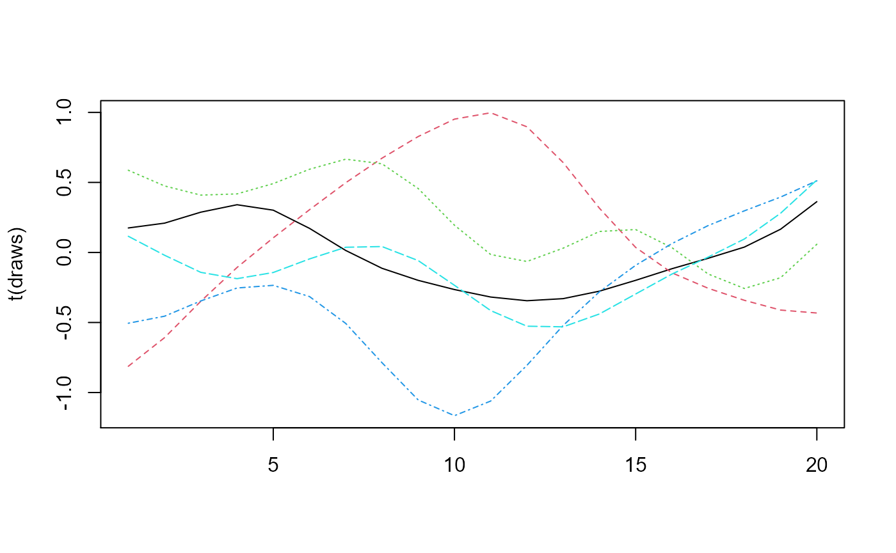

vignettes/app/notebook.Rmd
notebook.RmdLet \(\{Y_t\}\) be a stochastic process indexed by \(t\in\mathbb{R}\). We call \(\{Y_t\}\) a Gaussian Process if any finite set of draws \(\boldsymbol{y}\) from the process at points \(\boldsymbol{t}\) is multivariate normally distributed: \[ \boldsymbol{y} \sim \mathcal{MVN}\left(m(\boldsymbol{t}), k(\boldsymbol{t}, \boldsymbol{t}) \right) \] where \(m(\boldsymbol{t})\) is a mean function and \(k(\boldsymbol{t}, \boldsymbol{t})\) is a kernel function that gives the covariance between every point in \(\boldsymbol{t}\).
For this notebook, we assume the mean function is zero: \(m(\cdot) = 0\).
A popular choice of kernel is the squared exponential function: \[ k_{SQ}(t_1, t_2) = \sigma^2 \exp\left(-\frac{(t_1 - t_2)^2}{2\lambda^2} \right) \]
squared_exponential_kernel <- function(t1, t2, sigma, lambda) sigma^2 * exp(-(t1 - t2)^2 / (2 * lambda^2))We can draw from a Gaussian Process at points \(\boldsymbol{t}\) by drawing from a multivariate normal distribution with mean zero and covariance computed using the kernel function.
sigma <- slider(min = 0.1, max = 1, title = "Sigma: covariance scale parameter", step = 0.01, value = 0.5)
lambda <- slider(min = 0.1, max = 5, step = 0.01, value = 3, title = "Lambda: length-scale parameter")
{
t <- 20
mu <- rep(0, t)
Sigma <- outer(1:t, 1:t, squared_exponential_kernel, sigma, lambda)
draws <- mvtnorm::rmvnorm(5, mu, Sigma)
matplot(t(draws), type = 'l')
}